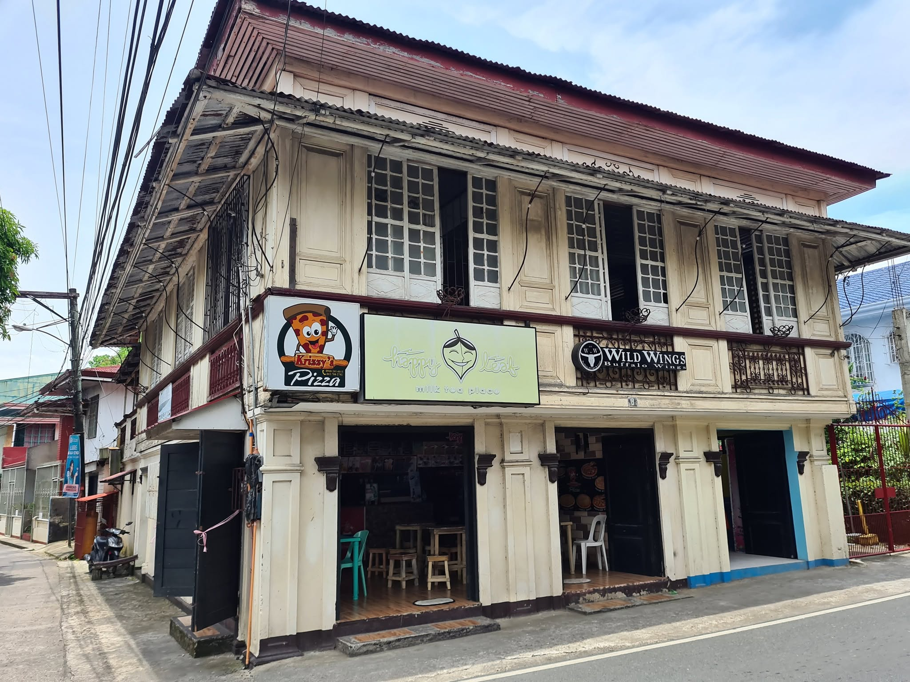
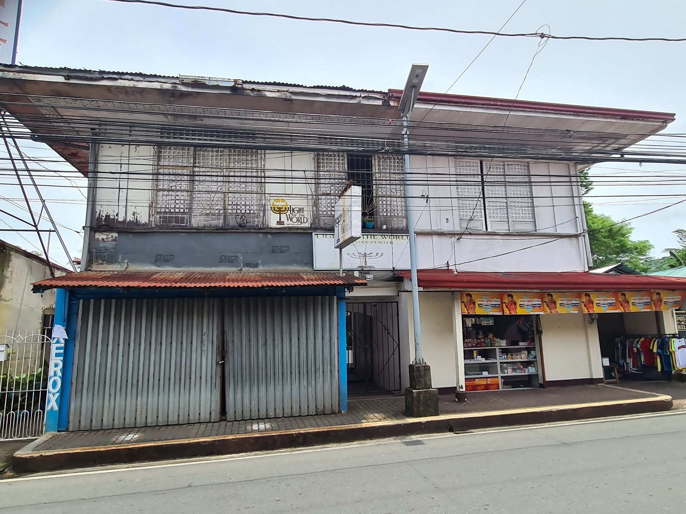
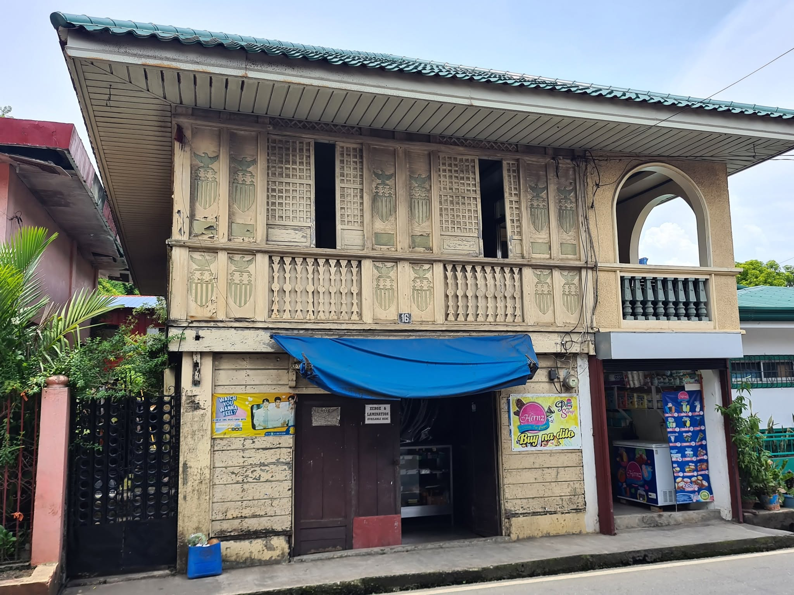
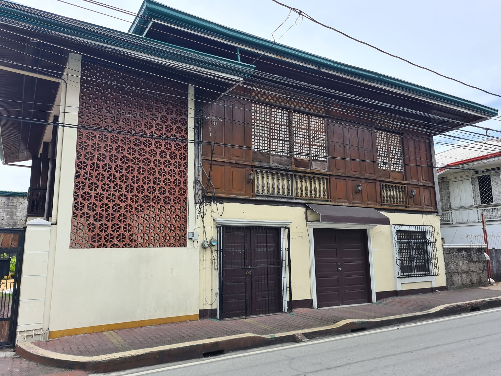
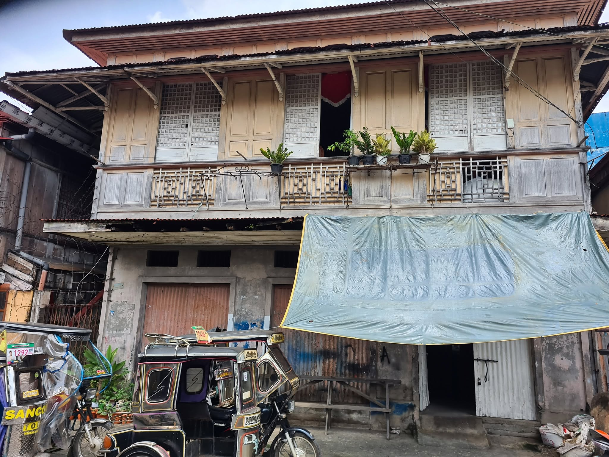
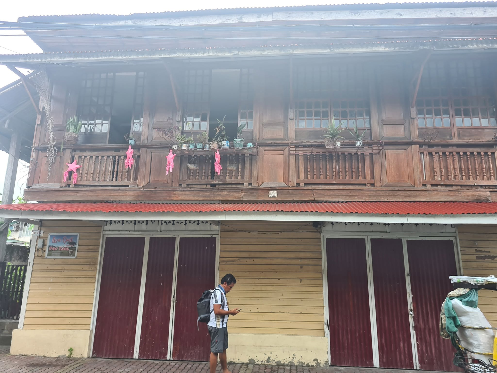
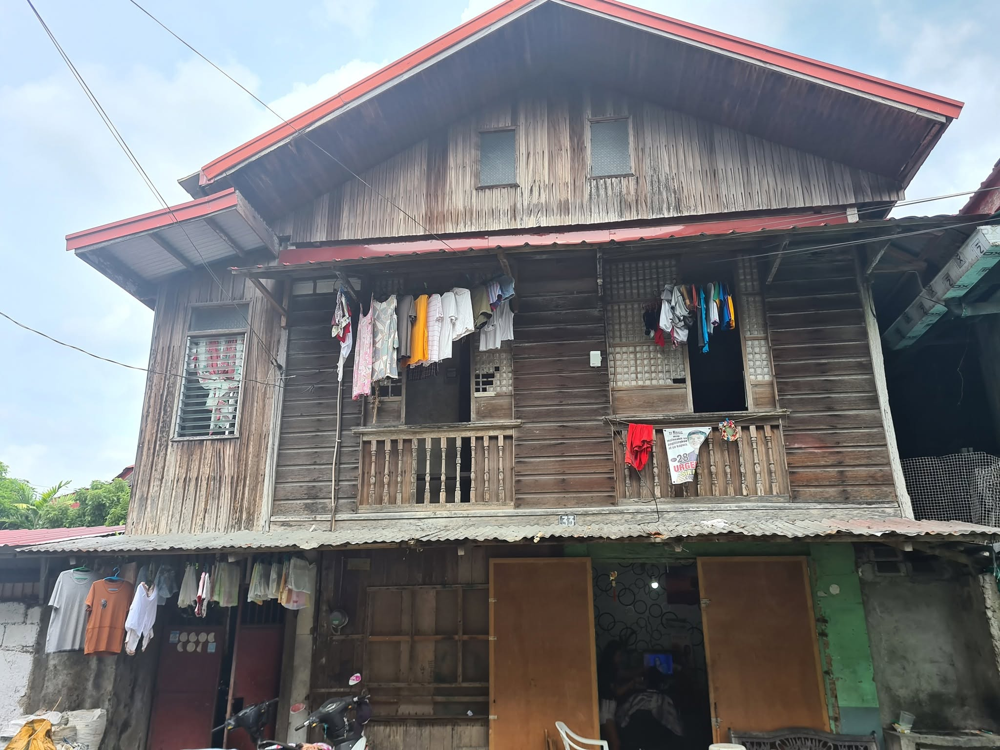

More than just stunning beaches and waterfalls, Mauban is a municipality in Quezon rich in history, heritage, and natural beauty. From its colonial landmarks and ancestral houses to its pristine islands and majestic waterfalls, this town offers a unique blend of the past and the present.
A town shaped by the sea, faith, and resilience — from its Franciscan roots to the present day.
Saint Bonaventure Parish Church, Mauban
c. 1583
Franciscan Missionaries Arrive
Spanish Franciscan missionaries established Mauban around this year, bringing Christianity and colonial administration to the area.
17th Century
Relocations and Moro Raids
Frequent Moro pirate raids forced the town to relocate several times, shaping the settlement's defensive character and the resilience of its people.
1647
Permanent Settlement
The town finally settled at its current location. The original stone church was also built around this time, becoming the spiritual heart of Mauban.
Early History
The Dumagats and Gatuban
Early inhabitants included the Dumagats, an indigenous people who lived along the Sierra Madre Mountain range. Gat Pagil, also known as Gatuban, is remembered for helping repel raids. The name Mauban is associated with Gatuban, whose nickname refers to gray hair.
“The name Mauban is associated with Gatuban, whose nickname refers to gray hair — a reminder of the town's legendary defender.”
Saint Bonaventure Parish Church
Also known as Mauban Church, this historic structure was first built around 1647. It stands as a testament to the town's colonial past and its enduring faith. The church has witnessed centuries of history, from pirate raids to the present day.
Note: Historical accounts presented here are drawn from local sources and tradition. Some dates and events remain subjects of ongoing historical research.
Natural Attractions
✦ ✦ ✦
From creamy white sand to cascading falls, Mauban's landscapes are as diverse as they are beautiful.
Cagbalete Island
Famous for its creamy white sand and turquoise waters, the shoreline changes dramatically with the tides. During low tide, exposed sand ripples create a unique and breathtaking landscape.
This sandbar becomes a wide sandy expanse during low tide and transforms into a shallow swimming area during high tide, offering a dynamic coastal experience.
Accessible via a paved trail, this waterfall offers an easy trek to a refreshing natural pool surrounded by lush greenery, a perfect escape into nature.
A white sand beach known for its scenic views, including a unique perspective of the power plant's lights at night. It is a quiet spot for locals and visitors seeking a different kind of coastal experience.
Mauban's ancestral houses reflect the Spanish colonial-era bahay na bato style, preserving the character of streets around the town plaza and Quezon Avenue.

Heritage House
A fine example of colonial architecture.

Heritage House
Steeped in history and local lore.

Heritage House
Preserving the town's architectural heritage.
Heritage House
A window into Mauban's past.
Heritage House
Colonial charm in every corner.

Heritage House
A testament to the town's enduring legacy.

Heritage House
Echoes of a bygone era.

Heritage House
Architectural beauty preserved.

Heritage House
A glimpse into the past.
Historical Landmarks
✦ ✦ ✦
Sites that stand as silent witnesses to Mauban's storied past.
Rizal Hill Park
Historically known as Calvario Hill, this site features the Rizal Monument and served as an observation post during World War II, offering a panoramic view of the town and its surroundings.
More than a coastal defense, the seawall holds cultural significance. It features the Gatuban monument and is remembered for its role during the Japanese landing in Quezon in 1941.
Reportedly constructed in 1725, this historic structure was built using limestone and seashells. It once supplied spring water to the community and is now preserved as a cherished historical landmark.
A major coal-fired power facility in Barangay Cagsiay I that has been supplying electricity to the Luzon grid since 2000. It is a key part of the town's modern industrial landscape.
This website is a digital collection dedicated to presenting the history, cultural heritage, and natural beauty of Mauban, Quezon. Through historical accounts, photographs, and informative articles, it aims to help visitors appreciate the town's rich past and the landmarks that continue to define its identity.
Credits & Sources
Historical information and images are drawn from local sources, public archives, and community-contributed materials. Where possible, original photographs and references have been used with respect for their licensing and access permissions. This is a non-commercial, educational project.
All images are used for illustrative purposes and may not depict exact locations. Please refer to original sources for verified historical data.